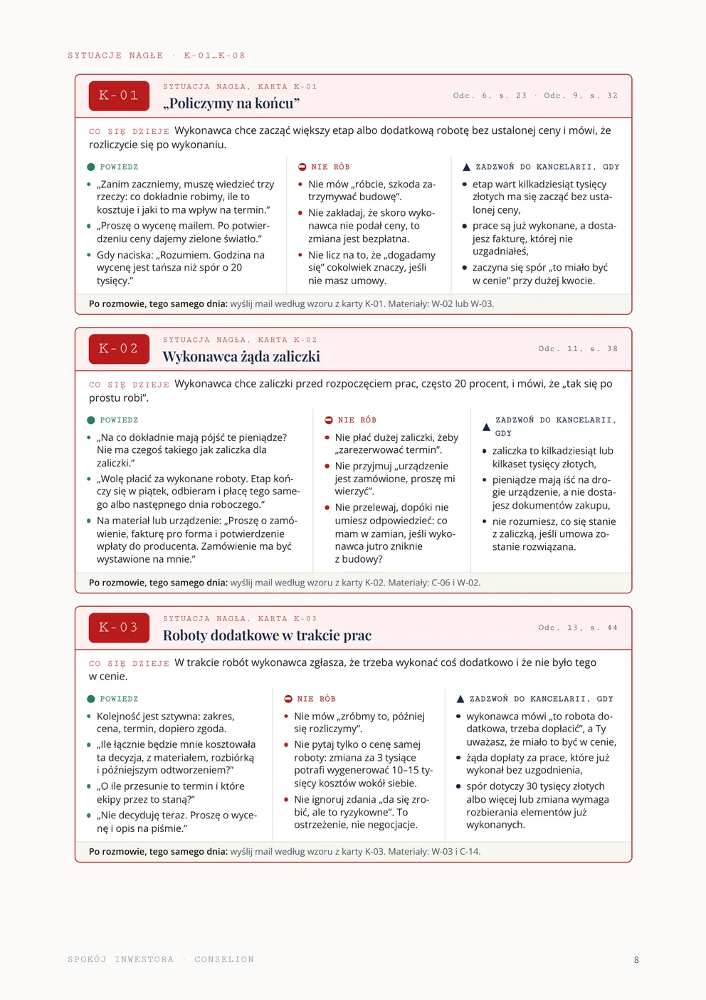
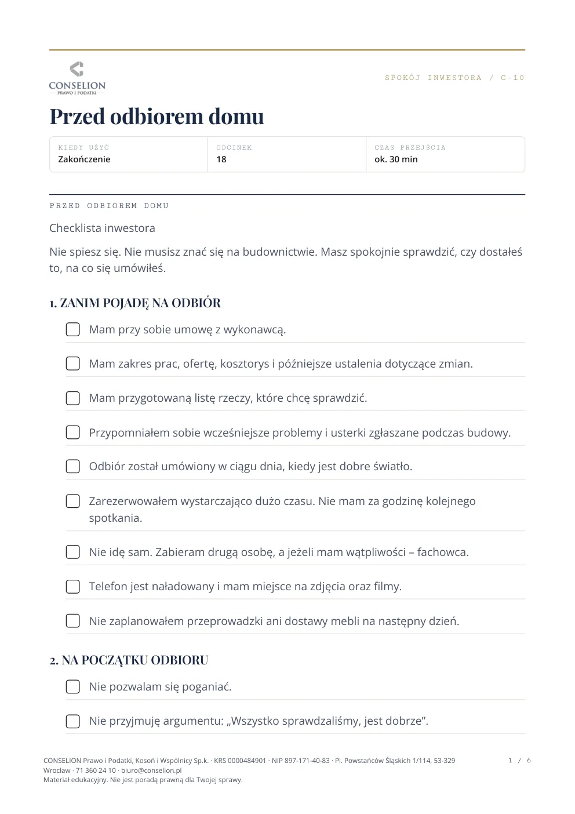
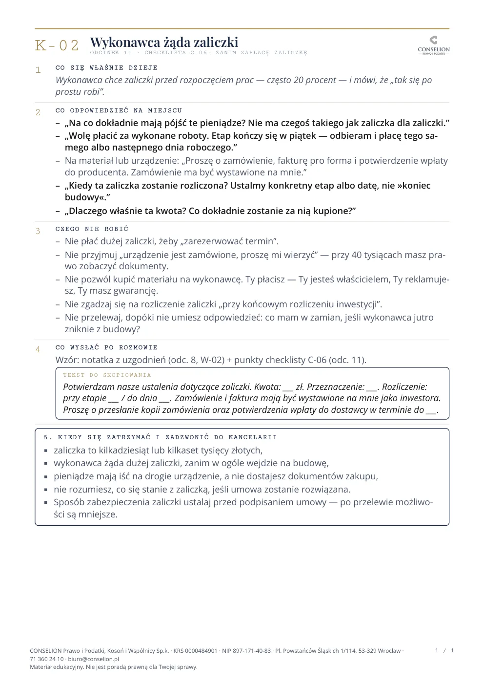
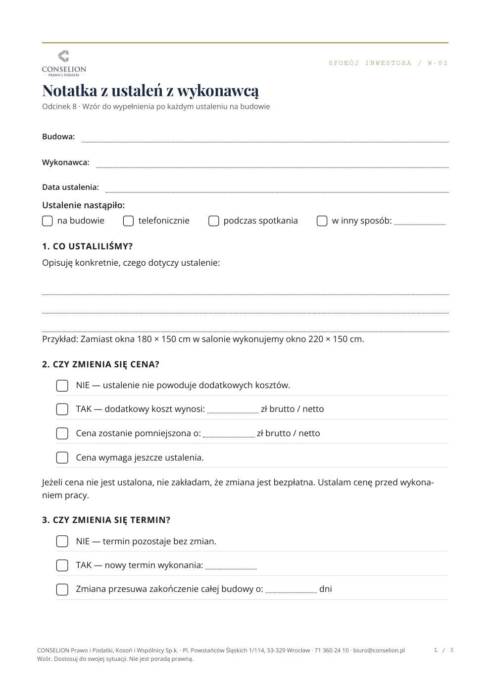
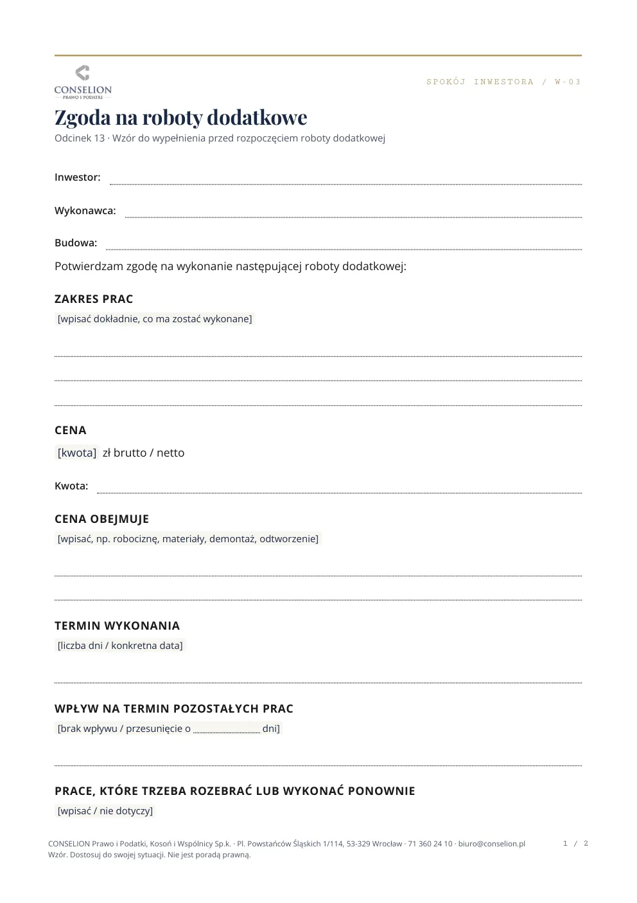

E-book
Cały program do czytania. Przy każdej sekcji widzisz, po co jest i kiedy po nią sięgnąć. Sytuacje nagłe mają osobne, wyraźne miejsce. Termin gotowości do ustalenia

Większość drogich problemów na budowie zaczyna się od źle opisanego zakresu prac i niejasnych terminów. Pokażę Ci, co ustalić przed podpisem. A gdy na budowie coś Cię zaskoczy, w kilka minut sprawdzisz, co zrobić.
Dla budujących dom i każdego, kto inwestuje dla siebie
Odtwarzacz zostanie osadzony po wyborze platformy wideo.
Program to zbiór krótkich materiałów: odcinków po 5 do 14 minut, checklist i kart na jedną stronę. Nie musisz przerabiać całości. Otwierasz to, czego dotyczy Twój problem, i chronisz cztery rzeczy.
W nagraniach opowiadam o sprawach, które prowadziłem. Trzy z nich pokazuję tutaj. Wszystkie dotyczą budowy domu i każdej dało się uniknąć, ustalając coś przed rozpoczęciem prac.
Inwestor budujący dom słyszy, że kolejny etap wymaga prac, których nie było w cenie. Nie chce zatrzymywać budowy, więc się zgadza. Po kilku tygodniach dostaje fakturę na kilkadziesiąt tysięcy złotych.
Najpierw zakres, cena i termin na piśmie. Dopiero potem zgoda.
Dom za 800 tysięcy złotych. Wykonawca dostał zapłatę za stan surowy, a razem z nią większość swojego zysku. Gdy inwestor zaczął zgłaszać uwagi, groźba zejścia z budowy niewiele już wykonawcę kosztowała.
Zostaw na koniec kwotę, która ma dla wykonawcy znaczenie.
Dom z tarasem nad garażem. Pierwsza ekipa robi izolację, kolejne wiercą w niej otwory i chodzą po niej z materiałami. W garażu pojawia się woda, a każda firma mówi, że to nie ona. Naprawa kosztuje setki tysięcy złotych.
Zanim ruszy kolejny etap, sprawdź, czy następna ekipa nie zniszczy tego, co już zrobiono.
Za każdym razem zabrakło tego samego: ustaleń na piśmie, zanim ruszyły prace. Pokażę Ci, jak je zrobić.
Program jest podzielony na małe, niezależne części. Każda sytuacja na budowie ma swój materiał, więc otwierasz tylko ten, którego potrzebujesz. Przyda się na dwa sposoby.
1
Przed wyborem wykonawcy, podpisem umowy, przelewem czy odbiorem oglądasz jeden odcinek i bierzesz checklistę. Wiesz, o co zapytać i co sprawdzić.
2
Wykonawca mówi, że czegoś nie było w cenie, albo grozi zejściem z budowy. Wychodzisz ze spotkania na pięć minut, otwierasz kartę reakcji i wracasz z gotowym zdaniem.
K-03 Roboty dodatkowe w trakcie prac
Dalej na karcie: gotowy e-mail z potwierdzeniem ceny i terminu oraz sytuacje, w których warto zadzwonić do kancelarii.
Tak wygląda karta reakcji. Pozostałe materiały dobierasz do sytuacji:
Jeden temat w 5 do 14 minut. Posłuchasz w drodze na budowę.
Punkt po punkcie sprawdzasz umowę, zaliczkę albo odbiór.
Jedna strona: co odpowiedzieć, czego nie robić, kiedy zadzwonić.
Notatka z ustaleń, zgoda na roboty dodatkowe, protokół odbioru.
Ten program nie zrobi z Ciebie kierownika budowy, projektanta ani prawnika. Masz wiedzieć, co sprawdzić, o co zapytać, co zapisać, co sfotografować i kiedy powiedzieć: stop.
W tych momentach decyzja podjęta w pośpiechu kosztuje najwięcej.
20 odcinków, 16 checklist, 8 kart reakcji, 7 wzorów i e-book. Każdy dokument jest przypisany do etapu budowy i przeczytasz go w kilka minut.
E-book
Cały program do czytania. Przy każdej sekcji widzisz, po co jest i kiedy po nią sięgnąć. Sytuacje nagłe mają osobne, wyraźne miejsce. Termin gotowości do ustalenia

16 checklist
Od zakupu działki po odbiór domu. Sprawdzasz punkt po punkcie, zanim podpiszesz, zapłacisz albo odbierzesz. Wydrukowane w skali szarości nadal są czytelne.

8 kart reakcji
Wykonawca mówi, że czegoś nie było w cenie, albo grozi zejściem z budowy? Na jednej stronie masz gotowe zdania na tę rozmowę.

7 wzorów
Notatka z ustaleń, zgoda na roboty dodatkowe, wezwanie do poprawy robót, e-mail po konflikcie, zgłoszenie wad i protokół odbioru. Do tego wzór strony zeszytu budowy, który przenosisz do własnego zeszytu w kratkę. Zgłoszenie wad i protokół mają osobno porady i dokument gotowy do wydruku.


Na pierwszych czterech etapach ustalasz zakres, cenę i terminy, zanim wykonawca dostanie Twoje pieniądze. Kolejne trzy przejdziesz z gotową odpowiedzią pod ręką.
Jeśli nie zadbasz o siebie na tych etapach, później może być za późno.
Wiesz, co sprawdzić przed zakupem działki i przed rozpoczęciem robót oraz o co zapytać architekta. Od pierwszego dnia zapisujesz ustalenia w zeszycie budowy.
W środku 3 checklisty, wzór zeszytu budowyodcinki 1 do 4
Rozpoznasz czerwone flagi u wykonawcy, zanim cokolwiek podpiszesz. Wiesz, co odpowiedzieć na „policzymy na końcu” i „tak się robi”.
W środku 2 checklisty, 2 karty reakcjiodcinki 5 i 6
Sprawdzisz umowę punkt po punkcie przed podpisem, skontrolujesz rozliczenie kosztorysowe i potwierdzisz ustalenia na piśmie.
W środku 2 checklisty, wzór notatkiodcinki 7 do 10
Zapłacisz zaliczkę i kolejne raty za to, co ustalone, a na koniec zostawisz kwotę, dla której wykonawcy opłaca się skończyć budowę.
W środku 3 checklisty, karta reakcjiodcinki 11 i 12
Gdy zdarzy się coś nieoczekiwanego, sięgasz po kartę reakcji.
Każdą robotę dodatkową zatwierdzisz z ceną i terminem na piśmie, zanim się zacznie. Udokumentujesz prace, które zostaną zakryte.
W środku checklista, wzór zgody, 2 karty reakcjiodcinki 13 do 16
Odbierzesz fundamenty, dach, instalacje i dom z checklistą w ręku, a wady zapiszesz w gotowym protokole.
W środku 4 checklisty, 2 wzory, 2 karty reakcjiodcinki 17 i 18
Wiesz, jak wezwać do poprawy robót, co napisać po konflikcie i kiedy zadzwonić do prawnika.
W środku checklista, 2 wzory, karta reakcjiodcinki 19 i 20
Wykonawca prosi o 20% zaliczki i mówi: „tak się robi”. Przy domu za 800 tysięcy złotych to 160 tysięcy złotych. Jeśli nie wiesz, na co dokładnie pójdą te pieniądze, ryzykujesz ich utratę. Kompletny program kosztuje 499 zł.
149 zł brutto
Masz przed sobą jedną ważną decyzję: umowę, zaliczkę albo odbiór.
499 zł brutto
Polecam go, jeśli budujesz albo zaraz zaczynasz i chcesz być przygotowany na każdym etapie.
999 zł brutto
Cały program i godzina rozmowy z kancelarią o Twojej sytuacji.
Koszyk nie jest jeszcze podłączony. Adresy zakupu uzupełnia się w pliku cta-config.js.
Tak. Program powstał przede wszystkim dla osób, które budują dom dla siebie, i na takich sprawach opieram przykłady. Te same zasady działają przy większych inwestycjach prowadzonych dla siebie.
Nie. Odcinki 13 do 20 dotyczą budowy w toku, odbiorów i sporów, a karty reakcji przydadzą się przy najbliższej trudnej rozmowie. Najwięcej zyskasz jednak przed umową i przed budową.
Nie musisz ich oglądać po kolei. Odcinek trwa od 5 do 14 minut, a kartę reakcji czy checklistę przeczytasz w kilka minut. Otwierasz to, czego akurat potrzebujesz.
Oni pilnują, jak wykonano prace. Program dotyczy Twojej pozycji wobec wykonawcy: umowy, płatności, ustaleń i odbiorów. Nadzoru nie zastępuje, a oszczędzanie na nim zaliczam do najdroższych błędów (odcinek 20).
Problemy zdarzają się też dobrym wykonawcom. Zwykle wynikają z braku ustaleń, a nie ze złej woli. Prawdziwy test zaczyna się, gdy coś pójdzie nie tak (odcinek 5). Zapis na piśmie chroni także dobrą współpracę.
Nie. Wskazuję trzy sytuacje, w których warto zadzwonić od razu: umowa na dużą kwotę przed podpisaniem, spór o zakres lub wady przy dużej kwocie i groźba zejścia wykonawcy z budowy (odcinek 20).
Tak. Nie robię z Ciebie kierownika budowy. Checklisty wykonasz bez wiedzy technicznej: otworzysz, zamkniesz, polejesz wodą, zrobisz zdjęcie i wpiszesz do protokołu (odcinek 18).
Informacje o prawie budowlanym znajdziesz. Tutaj masz je ułożone w kolejności inwestycji, z gotowymi zdaniami do wykonawcy, dokumentami i kartami, po które sięgasz w kilka minut. Odcinek 1 obejrzysz bez zakupu i sam ocenisz.
Tak. Zakres, zaliczki i odbiory wyglądają podobnie. Różnice omawiam w odcinku 4.
Nie. Wzory dotyczą codziennej organizacji budowy: notatka, zgoda, wezwanie, zgłoszenie wad, protokół odbioru. W odcinku 8 odradzam szablony umów z internetu. Umowę na dom powinien przygotować albo sprawdzić prawnik.
Program opiera się na tym, co powtarza się w każdej inwestycji: zakres, płatności, dokumentowanie, odbiory. Nietypową sprawę możesz omówić z kancelarią w pakiecie Premium.
Płatności obsługuje Stripe. Brak: platforma, okres dostępu, pobieranie plików, metody płatności, faktura